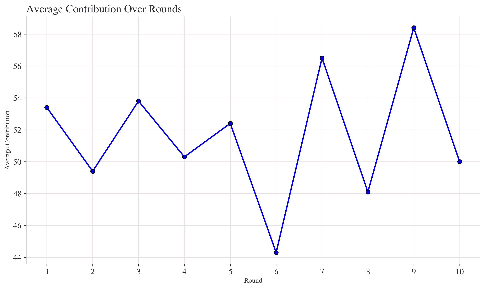
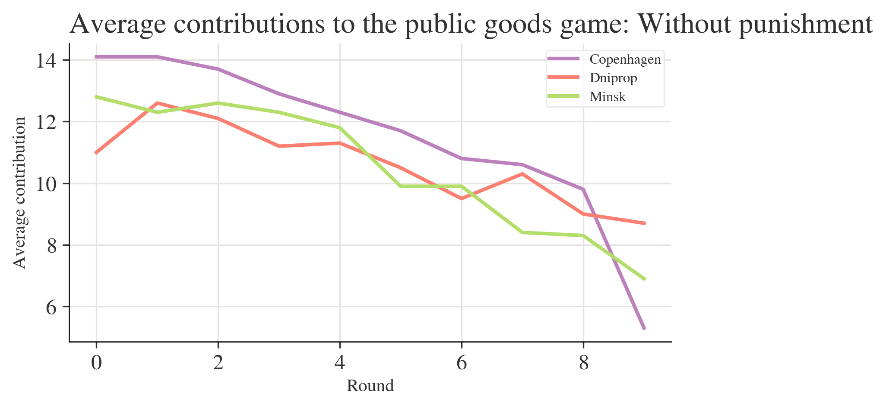
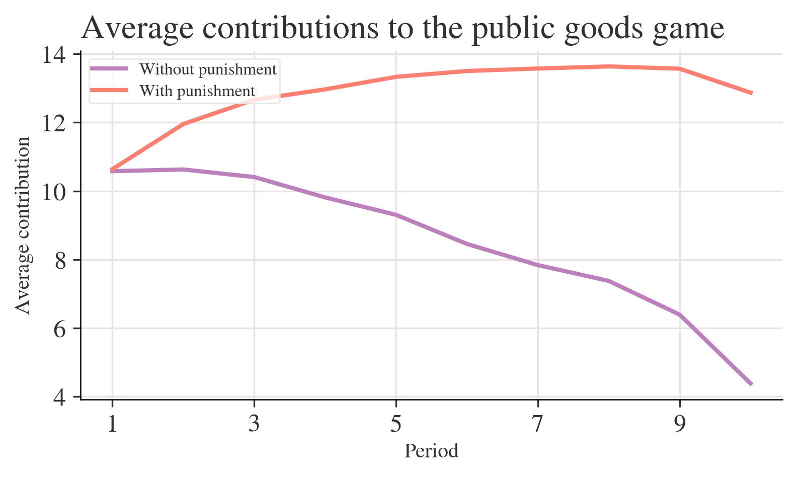
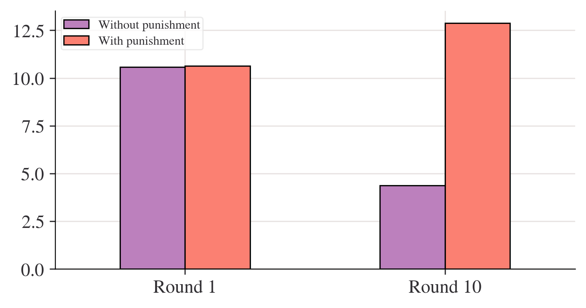
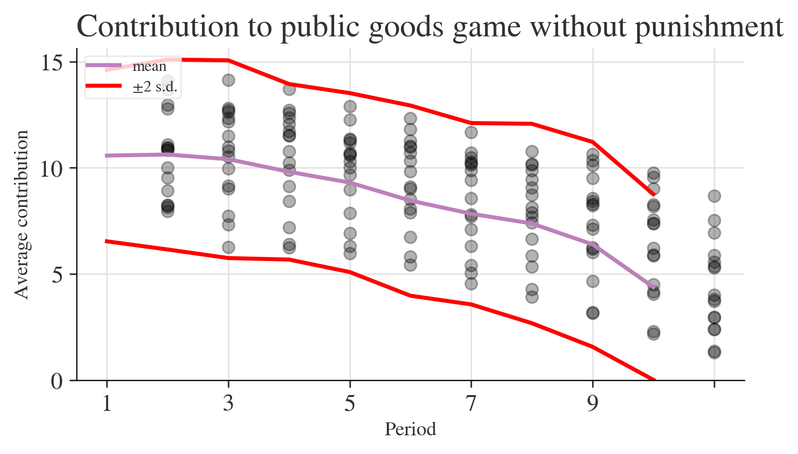
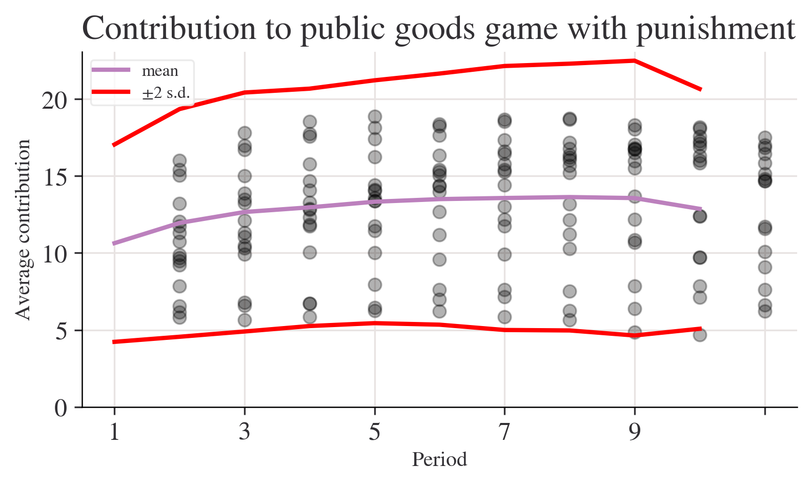
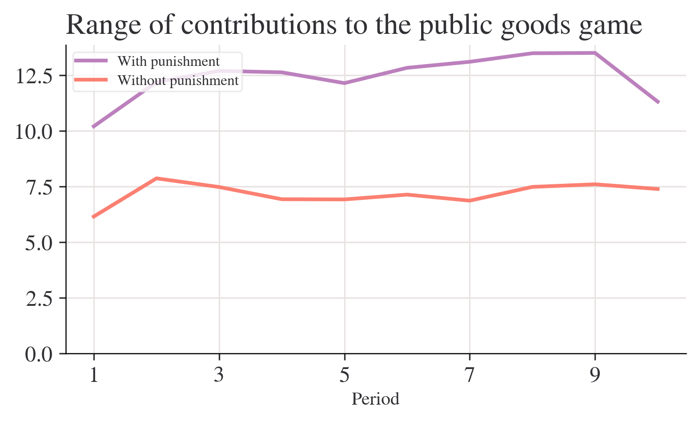

import pandas as pdIn [45]:
In [46]:
import matplotlib as mplIn [47]:
import matplotlib.pyplot as pltIn [48]:
import numpy as npIn [49]:
from pathlib import PathIn [50]:
import pingouin as pgIn [51]:
from lets_plot import *In [52]:
LetsPlot.setup_html(no_js=True)In [53]:
plt.style.use(
"https://raw.githubusercontent.com/aeturrell/core_python/main/plot_style.txt"
)In [54]:
import pandas as pd
import matplotlib.pyplot as pltIn [55]:
import pandas as pd
file_path = '游戏.xlsx'
df = pd.read_excel(file_path, header=1)In [56]:
df.columns = df.columns.str.strip()In [57]:
file_path = '游戏.xlsx'
df = pd.read_excel(file_path, header=0)In [58]:
df.columns = ['Round_Label', 'Round_10', 'Round_9', 'Round_8', 'Round_7', 'Round_6', 'Round_5', 'Round_4', 'Round_3', 'Round_2', 'Round_1']
round_data = df.iloc[1, 1:]
round_numbers = list(range(1, 11))In [59]:
avg_contribution_df = pd.DataFrame({
'Round': round_numbers,
'Average Contribution': round_data.values
})In [60]:
plt.figure(figsize=(10, 6))
plt.plot(avg_contribution_df['Round'], avg_contribution_df['Average Contribution'], marker='o', linestyle='-', color='b')
plt.title('Average Contribution Over Rounds')
plt.xlabel('Round')
plt.ylabel('Average Contribution')
plt.grid(True)
plt.xticks(round_numbers)
plt.tight_layout()
In [61]:
avg_contribution_description = f"""
Average contributions have varied across the 10 rounds of the game. Here are the key observations:
- Round 1: {avg_contribution_df.loc[avg_contribution_df['Round'] == 1, 'Average Contribution'].values[0]}
- Round 10: {avg_contribution_df.loc[avg_contribution_df['Round'] == 10, 'Average Contribution'].values[0]}
- Highest Average Contribution: {avg_contribution_df['Average Contribution'].max()} (Round {avg_contribution_df['Average Contribution'].idxmax() + 1})
- Lowest Average Contribution: {avg_contribution_df['Average Contribution'].min()} (Round {avg_contribution_df['Average Contribution'].idxmin() + 1})
"""
print(avg_contribution_description)
plt.show()
Average contributions have varied across the 10 rounds of the game. Here are the key observations:
- Round 1: 53.4
- Round 10: 50
- Highest Average Contribution: 58.4 (Round 9)
- Lowest Average Contribution: 44.3 (Round 6)
In [62]:
# Create a dictionary with the data in
data = {
"Copenhagen": [14.1, 14.1, 13.7, 12.9, 12.3, 11.7, 10.8, 10.6, 9.8, 5.3],
"Dniprop": [11.0, 12.6, 12.1, 11.2, 11.3, 10.5, 9.5, 10.3, 9.0, 8.7],
"Minsk": [12.8, 12.3, 12.6, 12.3, 11.8, 9.9, 9.9, 8.4, 8.3, 6.9],
}
df = pd.DataFrame.from_dict(data)
df.head()| Copenhagen | Dniprop | Minsk | |
|---|---|---|---|
| 0 | 14.1 | 11.0 | 12.8 |
| 1 | 14.1 | 12.6 | 12.3 |
| 2 | 13.7 | 12.1 | 12.6 |
| 3 | 12.9 | 11.2 | 12.3 |
| 4 | 12.3 | 11.3 | 11.8 |
In [63]:
# Plot the data
fig, ax = plt.subplots()
df.plot(ax=ax)
ax.set_title("Average contributions to the public goods game: Without punishment")
ax.set_ylabel("Average contribution")
ax.set_xlabel("Round");
In [64]:
import pandas as pdIn [65]:
file_path = "doing-economics-datafile-working-in-excel-project-2.xlsx"In [66]:
without_punishment = pd.read_excel(file_path, sheet_name=0, skiprows=1, nrows=10, usecols="B:Q")
without_punishment['Mean Contribution (Without Punishment)'] = without_punishment.mean(axis=1)In [67]:
with_punishment = pd.read_excel(file_path, sheet_name=0, skiprows=28, nrows=10, usecols="B:Q")
with_punishment['Mean Contribution (With Punishment)'] = with_punishment.mean(axis=1)C:\Users\llll\AppData\Roaming\Python\Python310\site-packages\openpyxl\worksheet\_reader.py:329: UserWarning: Unknown extension is not supported and will be removed
warn(msg)In [68]:
print("Mean Contributions Without Punishment:")
print(without_punishment[['Mean Contribution (Without Punishment)']])
print("\nMean Contributions With Punishment:")
print(with_punishment[['Mean Contribution (With Punishment)']])Mean Contributions Without Punishment:
Mean Contribution (Without Punishment)
0 10.578313
1 10.628398
2 10.407079
3 9.813033
4 9.305433
5 8.454844
6 7.837568
7 7.376388
8 6.392985
9 4.383769
Mean Contributions With Punishment:
Empty DataFrame
Columns: [Mean Contribution (With Punishment)]
Index: []In [69]:
pip install pandas matplotlib openpyxlDefaulting to user installation because normal site-packages is not writeable
Requirement already satisfied: pandas in c:\users\llll\appdata\roaming\python\python310\site-packages (2.2.3)
Requirement already satisfied: matplotlib in d:\programdata\anaconda3\lib\site-packages (3.7.0)
Requirement already satisfied: openpyxl in c:\users\llll\appdata\roaming\python\python310\site-packages (3.1.5)
Requirement already satisfied: tzdata>=2022.7 in c:\users\llll\appdata\roaming\python\python310\site-packages (from pandas) (2024.2)
Requirement already satisfied: python-dateutil>=2.8.2 in d:\programdata\anaconda3\lib\site-packages (from pandas) (2.8.2)
Requirement already satisfied: numpy>=1.22.4 in d:\programdata\anaconda3\lib\site-packages (from pandas) (1.23.5)
Requirement already satisfied: pytz>=2020.1 in d:\programdata\anaconda3\lib\site-packages (from pandas) (2022.7)
Requirement already satisfied: pyparsing>=2.3.1 in d:\programdata\anaconda3\lib\site-packages (from matplotlib) (3.0.9)
Requirement already satisfied: fonttools>=4.22.0 in d:\programdata\anaconda3\lib\site-packages (from matplotlib) (4.25.0)
Requirement already satisfied: kiwisolver>=1.0.1 in d:\programdata\anaconda3\lib\site-packages (from matplotlib) (1.4.4)
Requirement already satisfied: pillow>=6.2.0 in d:\programdata\anaconda3\lib\site-packages (from matplotlib) (9.4.0)
Requirement already satisfied: cycler>=0.10 in d:\programdata\anaconda3\lib\site-packages (from matplotlib) (0.11.0)
Requirement already satisfied: contourpy>=1.0.1 in d:\programdata\anaconda3\lib\site-packages (from matplotlib) (1.0.5)
Requirement already satisfied: packaging>=20.0 in d:\programdata\anaconda3\lib\site-packages (from matplotlib) (22.0)
Requirement already satisfied: et-xmlfile in d:\programdata\anaconda3\lib\site-packages (from openpyxl) (1.1.0)
Requirement already satisfied: six>=1.5 in d:\programdata\anaconda3\lib\site-packages (from python-dateutil>=2.8.2->pandas) (1.16.0)
Note: you may need to restart the kernel to use updated packages.In [70]:
import pandas as pd
import matplotlib.pyplot as plt
file_path = 'doing-economics-datafile-working-in-excel-project-2.xlsx'
df = pd.read_excel(file_path, sheet_name=None)C:\Users\llll\AppData\Roaming\Python\Python310\site-packages\openpyxl\worksheet\_reader.py:329: UserWarning: Unknown extension is not supported and will be removed
warn(msg)In [71]:
without_punishment = pd.DataFrame()
with_punishment = pd.DataFrame()In [72]:
for sheet_name, data in df.items():
if 'without punishment' in sheet_name.lower():
data = data.iloc[2:]In [73]:
for sheet_name, data in df.items():
if 'without punishment' in sheet_name.lower():
data = data.iloc[2:]
mean_contributions = data.iloc[:, 1:].mean(axis=1)
mean_contributions['Period'] = range(1, len(mean_contributions) + 1)
mean_contributions.set_index('Period', inplace=True)
mean_contributions.rename(columns={0: 'Mean Contribution'}, inplace=True)
if without_punishment.empty:
without_punishment = mean_contributions.copy()
else:
without_punishment = pd.concat([without_punishment, mean_contributions], ignore_index=True)
elif 'with punishment' in sheet_name.lower():
data = data.iloc[2:]
mean_contributions = data.iloc[:, 1:].mean(axis=1)
mean_contributions['Period'] = range(1, len(mean_contributions) + 1)
mean_contributions.set_index('Period', inplace=True)
mean_contributions.rename(columns={0: 'Mean Contribution'}, inplace=True)
if with_punishment.empty:
with_punishment = mean_contributions.copy()
else:
with_punishment = pd.concat([with_punishment, mean_contributions], ignore_index=True)In [74]:
import pandas as pd
data_np = pd.read_excel(
'C:/Users/llll/Desktop/xujin homework/practice/doing-economics-datafile-working-in-excel-project-2.xlsx',
usecols="A:Q",
header=1,
index_col="Period",
)C:\Users\llll\AppData\Roaming\Python\Python310\site-packages\openpyxl\worksheet\_reader.py:329: UserWarning: Unknown extension is not supported and will be removed
warn(msg)In [75]:
data_n = data_np.iloc[:10, :].copy()
data_p = data_np.iloc[14:24, :].copy()In [76]:
test_data = {
"City A": [14.1, 14.1, 13.7],
"City B": [11.0, 12.6, 12.1],
}In [77]:
# Original dataframe
test_df = pd.DataFrame.from_dict(test_data)
# A copy of the dataframe
test_copy = test_df.copy()
# A pointer to the dataframe
test_pointer = test_df
test_pointer.iloc[1, 1] = 99In [78]:
print("test_df=")
print(f"{test_df}\n")
print("test_copy=")
print(f"{test_copy}\n")test_df=
City A City B
0 14.1 11.0
1 14.1 99.0
2 13.7 12.1
test_copy=
City A City B
0 14.1 11.0
1 14.1 12.6
2 13.7 12.1
In [79]:
data_n.info()<class 'pandas.core.frame.DataFrame'>
Index: 10 entries, 1 to 10
Data columns (total 16 columns):
# Column Non-Null Count Dtype
--- ------ -------------- -----
0 Copenhagen 10 non-null object
1 Dnipropetrovs’k 10 non-null object
2 Minsk 10 non-null object
3 St. Gallen 10 non-null object
4 Muscat 10 non-null object
5 Samara 10 non-null object
6 Zurich 10 non-null object
7 Boston 10 non-null object
8 Bonn 10 non-null object
9 Chengdu 10 non-null object
10 Seoul 10 non-null object
11 Riyadh 10 non-null object
12 Nottingham 10 non-null object
13 Athens 10 non-null object
14 Istanbul 10 non-null object
15 Melbourne 10 non-null object
dtypes: object(16)
memory usage: 1.3+ KBIn [80]:
data_n = data_n.astype("double")
data_p = data_p.astype("double")In [81]:
# 使用 pd.to_numeric 转换，将无法转换的值设置为 NaN
data_n = data_n.apply(pd.to_numeric, errors='coerce')
data_p = data_p.apply(pd.to_numeric, errors='coerce')
# 检查数据类型
print(data_n.dtypes)
print(data_p.dtypes)Copenhagen float64
Dnipropetrovs’k float64
Minsk float64
St. Gallen float64
Muscat float64
Samara float64
Zurich float64
Boston float64
Bonn float64
Chengdu float64
Seoul float64
Riyadh float64
Nottingham float64
Athens float64
Istanbul float64
Melbourne float64
dtype: object
Copenhagen float64
Dnipropetrovs’k float64
Minsk float64
St. Gallen float64
Muscat float64
Samara float64
Zurich float64
Boston float64
Bonn float64
Chengdu float64
Seoul float64
Riyadh float64
Nottingham float64
Athens float64
Istanbul float64
Melbourne float64
dtype: objectIn [82]:
import numpy as np
mean_n_c = data_n.mean(axis=1)
mean_p_c = data_p.agg(np.mean, axis=1)C:\Users\llll\AppData\Local\Temp\ipykernel_15472\527227325.py:3: FutureWarning: The provided callable <function mean at 0x0000022EFBBD2440> is currently using DataFrame.mean. In a future version of pandas, the provided callable will be used directly. To keep current behavior pass the string "mean" instead.
mean_p_c = data_p.agg(np.mean, axis=1)In [83]:
import matplotlib.pyplot as plt
fig, ax = plt.subplots()
mean_n_c.plot(ax=ax, label="Without punishment")
mean_p_c.plot(ax=ax, label="With punishment")
ax.set_title("Average contributions to the public goods game")
ax.set_ylabel("Average contribution")
ax.legend();
In [84]:
partial_names_list = ["F. Kennedy", "Lennon", "Maynard Keynes", "Wayne"]
["John " + name for name in partial_names_list]['John F. Kennedy', 'John Lennon', 'John Maynard Keynes', 'John Wayne']In [85]:
['John F. Kennedy', 'John Lennon', 'John Maynard Keynes', 'John Wayne']['John F. Kennedy', 'John Lennon', 'John Maynard Keynes', 'John Wayne']In [86]:
# Create new dataframe with bars in
compare_grps = pd.DataFrame(
[mean_n_c.loc[[1, 10]], mean_p_c.loc[[1, 10]]],
index=["Without punishment", "With punishment"],
)
# Rename columns to have 'round' in them
compare_grps.columns = ["Round " + str(i) for i in compare_grps.columns]
# Swap the column and index variables around with the transpose function, ready for plotting (.T is transpose)
compare_grps = compare_grps.T
# Make a bar chart
compare_grps.plot.bar(rot=0);
In [87]:
n_c = data_n.agg(["std", "var", "mean"], 1)
n_c| std | var | mean | |
|---|---|---|---|
| Period | |||
| 1 | 2.020724 | 4.083325 | 10.578313 |
| 2 | 2.238129 | 5.009220 | 10.628398 |
| 3 | 2.329569 | 5.426891 | 10.407079 |
| 4 | 2.068213 | 4.277504 | 9.813033 |
| 5 | 2.108329 | 4.445049 | 9.305433 |
| 6 | 2.240881 | 5.021549 | 8.454844 |
| 7 | 2.136614 | 4.565117 | 7.837568 |
| 8 | 2.349442 | 5.519880 | 7.376388 |
| 9 | 2.413845 | 5.826645 | 6.392985 |
| 10 | 2.187126 | 4.783520 | 4.383769 |
In [88]:
p_c = data_p.agg(["std", "var", "mean"], 1)In [89]:
fig, ax = plt.subplots()
n_c["mean"].plot(ax=ax, label="mean")
# mean + 2 standard deviations
(n_c["mean"] + 2 * n_c["std"]).plot(ax=ax, ylim=(0, None), color="red", label="±2 s.d.")
# mean - 2 standard deviations
(n_c["mean"] - 2 * n_c["std"]).plot(ax=ax, ylim=(0, None), color="red", label="")
for i in range(len(data_n.columns)):
ax.scatter(x=data_n.index, y=data_n.iloc[:, i], color="k", alpha=0.3)
ax.legend()
ax.set_ylabel("Average contribution")
ax.set_title("Contribution to public goods game without punishment")
plt.show();
In [90]:
fig, ax = plt.subplots()
p_c["mean"].plot(ax=ax, label="mean")
# mean + 2 sd
(p_c["mean"] + 2 * p_c["std"]).plot(ax=ax, ylim=(0, None), color="red", label="±2 s.d.")
# mean - 2 sd
(p_c["mean"] - 2 * p_c["std"]).plot(ax=ax, ylim=(0, None), color="red", label="")
for i in range(len(data_p.columns)):
ax.scatter(x=data_p.index, y=data_p.iloc[:, i], color="k", alpha=0.3)
ax.legend()
ax.set_ylabel("Average contribution")
ax.set_title("Contribution to public goods game with punishment")
plt.show();
In [91]:
data_p.apply(lambda x: x.max() - x.min(), axis=1)Period
1 10.199675
2 12.185065
3 12.689935
4 12.625000
5 12.140375
6 12.827541
7 13.098931
8 13.482621
9 13.496754
10 11.307360
dtype: float64In [92]:
# A lambda function accepting three inputs, a, b, and c, and calculating the sum of the squares
test_function = lambda a, b, c: a**2 + b**2 + c**2
# Now we apply the function by handing over (in parenthesis) the following inputs: a=3, b=4 and c=5
test_function(3, 4, 5)50In [93]:
range_function = lambda x: x.max() - x.min()
range_p = data_p.apply(range_function, axis=1)
range_n = data_n.apply(range_function, axis=1)
fig, ax = plt.subplots()
range_p.plot(ax=ax, label="With punishment")
range_n.plot(ax=ax, label="Without punishment")
ax.set_ylim(0, None)
ax.legend()
ax.set_title("Range of contributions to the public goods game")
plt.show();
In [94]:
funcs_to_apply = [range_function, "max", "min", "std", "mean"]
summ_p = data_p.apply(funcs_to_apply, axis=1).rename(columns={"<lambda>": "range"})
summ_n = data_n.apply(funcs_to_apply, axis=1).rename(columns={"<lambda>": "range"})In [95]:
summ_n.loc[[1, 10], :].round(2)| range | max | min | std | mean | |
|---|---|---|---|---|---|
| Period | |||||
| 1 | 6.14 | 14.10 | 7.96 | 2.02 | 10.58 |
| 10 | 7.38 | 8.68 | 1.30 | 2.19 | 4.38 |
In [96]:
summ_p.loc[[1, 10], :].round(2)| range | max | min | std | mean | |
|---|---|---|---|---|---|
| Period | |||||
| 1 | 10.20 | 16.02 | 5.82 | 3.21 | 10.64 |
| 10 | 11.31 | 17.51 | 6.20 | 3.90 | 12.87 |
In [97]:
import pingouin as pg
pg.ttest(x=data_n.iloc[0, :], y=data_p.iloc[0, :])| T | dof | alternative | p-val | CI95% | cohen-d | BF10 | power | |
|---|---|---|---|---|---|---|---|---|
| T-test | -0.063782 | 30 | two-sided | 0.949567 | [-2.0, 1.87] | 0.02255 | 0.337 | 0.050437 |
In [98]:
pg.ttest(x=data_n.iloc[0, :], y=data_p.iloc[0, :], paired=True)| T | dof | alternative | p-val | CI95% | cohen-d | BF10 | power | |
|---|---|---|---|---|---|---|---|---|
| T-test | -0.149959 | 15 | two-sided | 0.882795 | [-0.92, 0.8] | 0.02255 | 0.258 | 0.05082 |
In [99]:
# 创建一个包含索引1到11的新索引
new_index = range(1, 12)
# 重新索引DataFrame，包括不存在的索引10
reindexed_summ_n = summ_n.reindex(new_index)
# 现在您可以安全地访问索引10（尽管它的值将是NaN）
print(reindexed_summ_n.loc[10, :].round(2))range 7.38
max 8.68
min 1.30
std 2.19
mean 4.38
Name: 10, dtype: float64